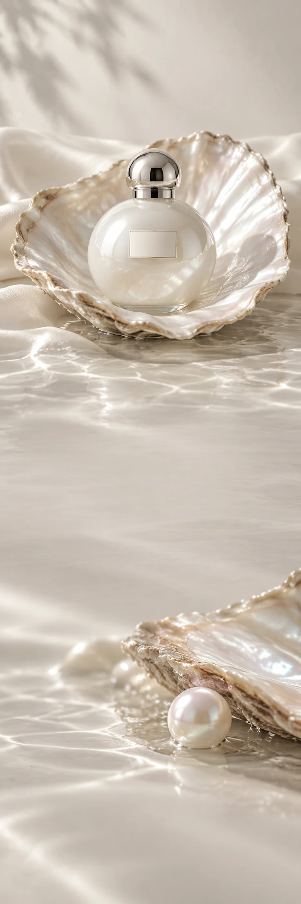

PEARL THEORY
ParfumGeur-edit
PEARL THEORY / A SOFTER PRESENCE
Stil.
Maar niet onzichtbaar.
Ontdek Pearl Theory PEARL THEORY / VAN DICHTBIJ
Licht op de huid.
Een eigen verhaal.
Poederige tonen, een zachte bloem en een lichte houtbasis. Pearl Theory onderzoekt hoe klein een gebaar kan zijn, en toch iets kan veranderen.
01Poeder
02Witte bloem
03Licht hout
Zacht is
ook een keuze.
Een zachte kant kan heel uitgesproken zijn.
Ontdek Pearl Theory